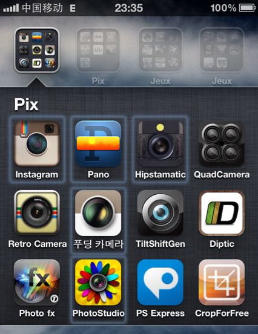

Mon, 13 Dec 2010 14:26:00 · iPhone4 · iPhone · Apple · Photo · Photography · App
My Top 5 Favourite iPhone Photo Apps in 2010

For those who loves taking photos using your sweet iPhone 4, here’s some camera and photo editing apps that I’ve found most useful in the past year. Heck, I have to admit that my iPhone 4 was definitely my unofficial 2nd camera when I travel… after my Leica M9. No kidding!
So here goes…
–
I must say that I haven’t been addicted to any app in the past few months as much as I did Instagram. What can I say, anything that screams photo sharing simply appeals to my vanity (and stroke my narcissistic side). It just hooked me. No fancy bell and whistles, just to share photo, which suits me just fine. On top of that, it allows you to share your pix to Twitter/Facebook/Tumblr/Posterous/Flickr and Foursquare. Thanks to Instagram, I’ve been abandoning my FB for quite a while now. If you haven’t use it yet, then I suggest you rectify that by downloading the app now and unleashed the photographer in you! - You can find me on Instagram under @vnsavitri handler.
• Pano
This photo app is probably the 2nd most-used camera app on my iPhone 4 when I travelled to Peru last autumn, with the first being my.. ahem Leica M9. Seriously, this app takes a sweet Panoramic pix with seamless stitches, at least to an amateur/naked eyes. Oh yes, I’ve used all the other panoramic apps trust me, bought ‘em, tried 'em, and discard 'em all… but this one though, stays. - Here’s a sample photo that I took with Pano Camera app.
Trust the Korean to come up with a slick camera app that gives your pix that retro split panels Lomo-look, classic pinhole or even medium format. I particularly dig this app to shoot some stylish food snapshots. And it ain’t disappointing indeed! What’s better, this app is totally gratis! There’s only one catch though, all the UI is in Korean. So unless you understand the language, then I suggest you stick to its basic/default settings. - Here’s a sample photo I took using Pudding Camera app.
This is probably the only photo editing tool that I frequently use on my iPhone 4, despite the fact that I have at least three other different apps installed. It’s a simple and no nonsense app that lets you do colour correction, cropping, etc… as well as adding some of those fancy ol’ skool look, and not the tacky one at that either. I mostly use the elegant Vignette f/x for subtle framing. And if I feel a bit adventurous, I picked either the Groovy Lo-Fi or the Cross Processing f/x.
I mostly use Hipstamatic with the Dali pack combined with the Helga Viking lens simply because it produces that wicked looking pix without the array of gimmicky f/x. Yup, subtlety and restraint are definitely key here. What bugs me though, if you want those extra bell and whistles for lens or film roll, you gotta reach deeper into your pocket because those ain’t free.
–
Last, but not least.. of course, the default iPhone 4 camera still top the cake! Nuf said, eh… ^_^